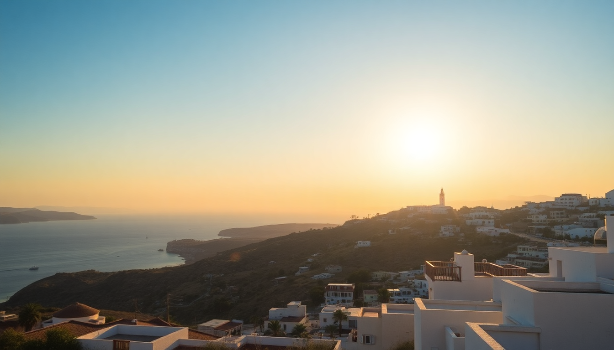

Where to Stay in Mykonos: Best Areas for Every Budget

I’ve been to Mykonos three times now, and each trip taught me something different about where to lay your head. The first time, I picked a cheap room near the port and spent half my holiday on the bus. The second, I splurged on a cliffside spot in Agios Ioannis and barely left the pool. The third? I finally got it right for my budget and style. This guide breaks down each neighborhood so you can skip the trial-and-error.
What’s the best area for nightlife and partying?
If you came to dance until dawn, base yourself near Chora (Mykonos Town) or Super Paradise Beach. These two spots are the epicenter of the island’s after-dark scene.
- Chora has the famous maze of winding alleys packed with cocktail bars like Scandinavian Bar and Astra. We stayed at Semeli Hotel here—a short walk to the chaos but quiet enough to sleep. Expect to pay €200–400/night in high season.
- Super Paradise Beach is louder and more beach-club focused. The Super Paradise Beach Hotel puts you right on the sand, but rooms are basic for the price (€250+). If you want a proper night’s sleep, don’t stay here—music booms until 4 AM.
- Paradise Beach is the budget alternative. Dorms at Paradise Beach Resort start around €50/night, but it’s a backpacker scene with shared bathrooms.
Fair warning: both beaches are a 15-minute taxi ride (€25–40) from town, so factor that into your nightly budget.
Where should families and couples stay for a quiet beach holiday?
For calm water, easy access to restaurants, and zero party noise, head to Platis Gialos or Ornos. These are the most family-friendly bays on the south coast.
- Platis Gialos has a long sandy beach with calm, shallow water. We booked Kivotos Club Hotel last June—it’s pricey (€400+/night) but the service is flawless and the pool overlooks the sea. For mid-range, Platis Gialos Hotel runs €150–250 and is steps from the beach.
- Ornos is slightly less developed but has better tavernas. Kensho Ornos is a boutique option with a small spa (€300–500/night). We ate at Bowl Me Over for fresh bowls and Kostas Taverna for grilled octopus—both solid, no tourist mark-up.
- Both bays have water taxis (€2–3) to Chora every 30 minutes, so you’re never stranded.
What’s the best area for luxury and sunset views?
Splurge on Agios Ioannis or Agios Stefanos for postcard-worthy sunsets without the Chora crowds. These are the classic “celebrity” spots.
- Agios Ioannis is a quiet cove with a view of Delos island. Rocabella Mykonos Hotel is our favorite—infinity pool, private balconies, and rooms from €350. The beach itself is small and rocky, so bring water shoes.
- Agios Stefanos has a wider beach and more hotel options. Mykonos Blu (€500–800) is a Grecotel property with a massive pool and direct beach access. The sunsets here are ridiculous—we watched from the bar with a gin and tonic.
- Both areas have limited dining. We walked to Joanna’s Nikos Place in Agios Stefanos for grilled fish, but you’ll need a taxi (€15) for anything else.
Is Mykonos Town (Chora) worth the premium?
Yes, if you want to walk everywhere and don’t mind noise. Chora is the heart of the island—cobblestone streets, whitewashed houses, and every shop imaginable.
- Pension Joanna is a budget gem (€80–120/night) with basic rooms but a rooftop terrace overlooking the windmills. Book months ahead.
- Rocas Mykonos (€200–350) is a mid-range spot with a small pool and a 5-minute walk to Little Venice.
- Myconian K Collection is the luxury pick (€600+), but honestly, you’re paying for the address.
- Downside: rooms are small, streets are loud until 2 AM, and parking is a nightmare. We once spent 40 minutes circling for a spot. If you rent a car, stay outside town.
What about Ano Mera for a budget or local vibe?
Ano Mera is the island’s second town, 8 km inland. It’s cheaper, quieter, and feels like real Greece—not a whitewashed Instagram set.
- Hotel Ano Mera is basic (€60–90/night) with clean rooms and a small pool. We stayed here on our first trip and loved the low-key evenings.
- The main square has Oti Kalo for gyros (€4) and Taverna to Kastro for moussaka. No beach clubs, no DJs.
- You’ll need a scooter or bus to reach beaches like Kalafatis or Agia Anna (10–15 minutes). Bus fare is €1.80.
- Best for: backpackers, solo travelers on a tight budget, or anyone who wants to avoid the party scene entirely.
Which beach is best for water sports and active travelers?
Elia Beach is the longest sandy beach on Mykonos and the hub for water sports. It’s also nudist-friendly on one end, so heads up.
- Elia Beach Hotel is mid-range (€150–250) with direct beach access. We rented a sunbed for €25 and spent the day on a paddleboard.
- Kalafatis Beach is smaller but windier—great for windsurfing and kiteboarding. Kalafatis Beach Studios (€100–180) is a no-frills option.
- Both beaches have tavernas on the sand. Elia Restaurant serves decent seafood, but the real find is Kiki’s Taverna at Agios Sostis—cash only, no reservations, and the best grilled chicken on the island.
How do I get around Mykonos without a car?
Public buses and taxis work, but they’re not perfect. Here’s what we learned:
- KTEL buses run from the Fabrika station in Chora to most beaches (€1.80–2.50). They’re reliable but crowded in July–August. We waited 45 minutes for a bus to Super Paradise at 11 AM.
- Taxis are expensive and scarce. Download the Mykonos Taxi app, but expect €25–40 for a 15-minute ride.
- Renting a scooter or ATV is the best value (€30–50/day). We used Moto Rent Mykonos near the Old Port—no issues. Just watch for loose gravel on dirt roads.
- Water taxis from Platis Gialos to Chora are cheap (€2) and scenic.
FAQ
What’s the cheapest time to visit Mykonos for accommodation? Late September and early October. We booked a room at Pension Joanna in Chora for €70/night in late September—half the July price. The sea is still warm, and most restaurants stay open through mid-October. Avoid August entirely unless you enjoy paying €400 for a closet.
Is it better to stay in Mykonos Town or by the beach? It depends on your priorities. Chora gives you walkable nightlife and dining but no beach. Beach areas like Platis Gialos or Ornos give you sand and silence but require transport for dinner. I’d choose Chora for a 3-night party trip, and Ornos for a 5-night relaxing stay.
Can I stay in Mykonos on a backpacker budget? Yes, but you’ll need to compromise. Ano Mera has rooms under €80/night. Hostels like Paradise Beach Resort or Mykonos Backpackers near the port offer dorms from €30–50. The catch: you’ll spend on transport and food, so budget €60–80/day total.
Conclusion
- For nightlife: stay in Chora (walkable bars) or Super Paradise (beach clubs).
- For families or couples: Platis Gialos and Ornos offer calm beaches and good tavernas.
- For luxury sunsets: Agios Ioannis or Agios Stefanos with infinity pools.
- For budget travelers: Ano Mera or hostels near the port.
- For active travelers: Elia Beach for water sports, Kalafatis for windsurfing.
- Skip the rental car in high season—use buses, water taxis, or scooters instead.